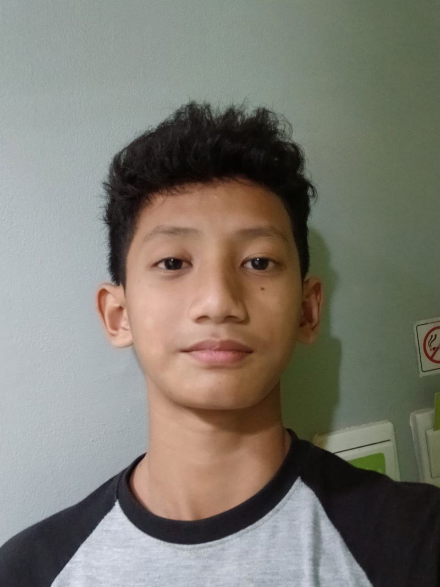

Karya Nyata dari Proses Belajar

Perkenalkan nama saya Azka Athallah Raka Priyohadi biasanya dipanggil Raka. Saya dari 9 An-Nashr SMPIT AL-HARAKI
Saya Raka, saya merupakan anak ke 2 dari 2 besaudara. saat ini saya ringgal di perumahan Bella Cassa Residance
Saya memiliki minat di bidang Olahraga, Komputer, dan fisika Dan saya memiliki bakat di bidang olahraga
Cita cita saya adalah sebagai kimiawan dan saya juga bercita cita agar dapat masuk ke dalam fakultas impian saya yaitu teknik kimia. harapan saya kedepannya saya dapat lulus dangan lancar di SMPIT AL-HARAKI dengan lancar dan saya berharap agar saya dapat mengikuti pembelajaran di SMA dengan baik
Dari uprak ini saya mendapat banyak pelajaran. kita membutuhkan sikap Manajeman waktu yangb agus, disiplin, proaktif dan jujur agar kita dapat mnyelesaikan ujian dengan maksimal. kesan saya selama belajar di kelas 9 An-Nasr itu saya sangat nyaman dengan kelas ini. karena saya nyama dengan kelas ini saya dapat dengan mudah memahami materi yang disampaikan dengan guru. Lingkungan sekolah juga sangat memberikan kesan nyaman tersendiri untuk saya.